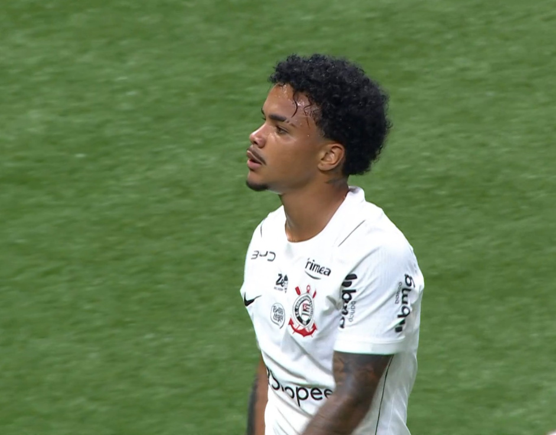

Atacante do Corinthians revela frustração com empate diante do Atlético e projeta 'final' na Arena
Kaio César lamentou o empate fora de casa e destacou o próximo compromisso na Neo Química Arena como uma decisão.

Na noite desta quarta-feira, o Corinthians ficou no empate com o Atlético Mineiro, por 1 a 1, pela 36ª rodada do Campeonato Brasileiro. Na Arena MRV, o gol corinthiano foi marcado pelo atacante Kaio César.
O camisa 37 lamentou o empate, mas avaliou que somar um ponto fora de casa também tem seu valor na reta final do Campeonato Brasileiro. O atacante ressaltou a importância do próximo compromisso, na Neo Química Arena, e classificou o duelo como uma decisão para o Corinthians na luta para deixar a situação incômoda na tabela.
"É frustrante, porque a gente queria a vitória, a gente veio aqui e a gente precisava muito dessa vitória para nos dar mais um gás nessa reta final, mas um ponto também não é ruim não, fora de casa. Agora, a gente vai pro confronto muito direto em casa, é uma final pra gente e vamos em busca dos três pontos para sair dessa situação", iniciou Kaio.
O atacante também comentou o momento individual que vive com a camisa alvinegra. Autor de mais um gol, Kaio César agradeceu pela fase atual e reforçou o desejo de continuar contribuindo com a equipe. O jogador ainda projetou o confronto diante do Grêmio e destacou a necessidade de manter o foco para buscar uma boa atuação.
"Eu quero ajudar o Corinthians de todas as formas, agradeço muito a Deus pela fase que eu estou vivendo, por mais um gol hoje aqui, agora é concentrar porque eu preciso fazer um grande jogo contra o Grêmio", concluiu Kaio.